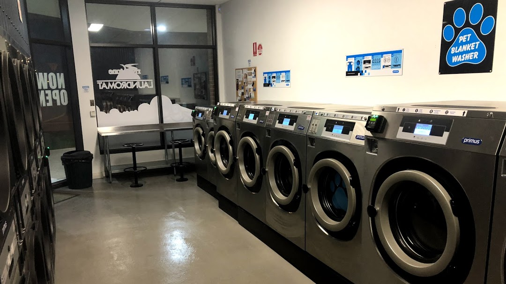
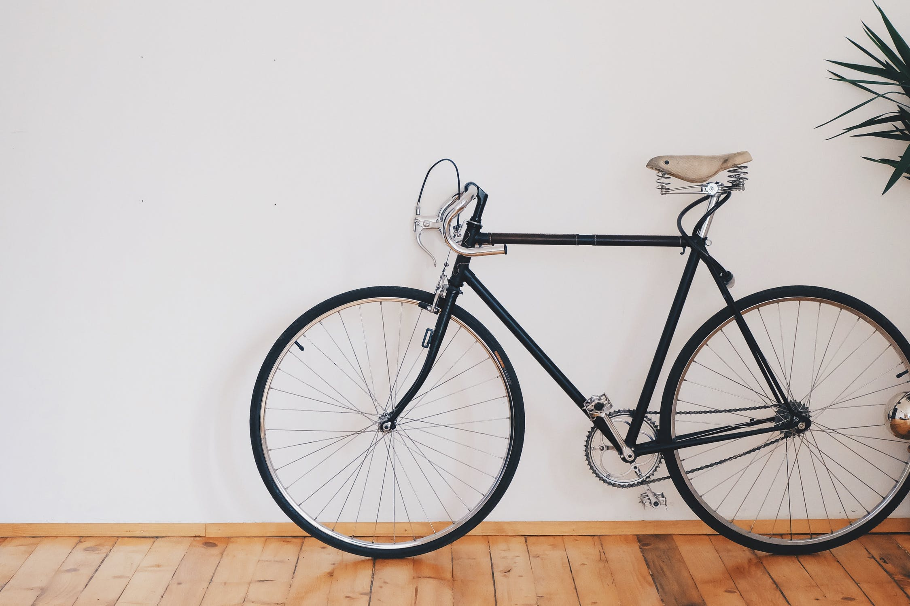

Buiten het vinden van supermarkten zijn er natuurlijk nog andere dingen die nuttig kunnen zijn voor een student in Leuven. Daarom hebben we voor jullie enkele plekjes gevonden die van pas kunnen komen als je regelmatig in Leuven bent.
Het kan wel eens voorkomen dat je dringend kleren moet wassen, maar dat kan moeilijk zijn als je op kot geen wasmachine hebt. Gelukkig zijn er in Leuven verschillende wasserettes! Je kan bijvoorbeeld je was doen bij Sun Wash Center op de Slachthuislaan 1 en voor een redelijke prijs. Bekijk ook zeker eens de Wasbar, hier kan je tijdens het wassen van je kleren ook iets eten.

We wensen het natuurlijk niemand toe, maar helaas is het niet abnormaal om eens ziek te worden. Daarom is het belangrijk om te weten waar er een goede apotheek te vinden is. Apopark is zeker aan te raden om al je medicijnen te kopen (waardoor je hopelijk snel terug beter bent en terug je studentenleven kan oppikken). Deze apotheek is makkelijk bereikbaar op de Tiensestraat, 81.

Uiteraard moet een student in Leuven zich ook goed kunnen verplaatsen, een fiets kan hiervoor zeer handig zijn. Dat is dan ook nog eens goed voor het milieu. Nog een groot voordeel is dat je helemaal geen last hebt van het drukke verkeer of de vertragingen van het openbaar vervoer. Bij Velo kan je een degelijke fiets huren aan schappelijke prijzen. Als student aan de KUL of UCLL, krijg je zelfs korting.
